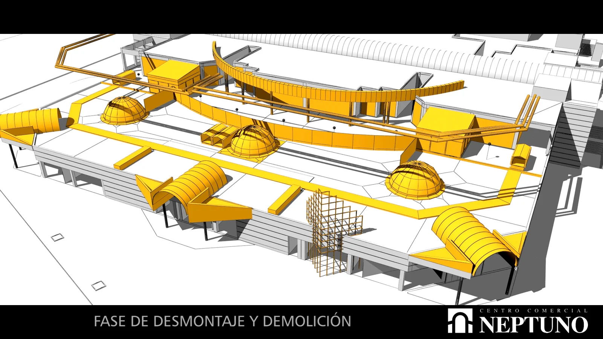
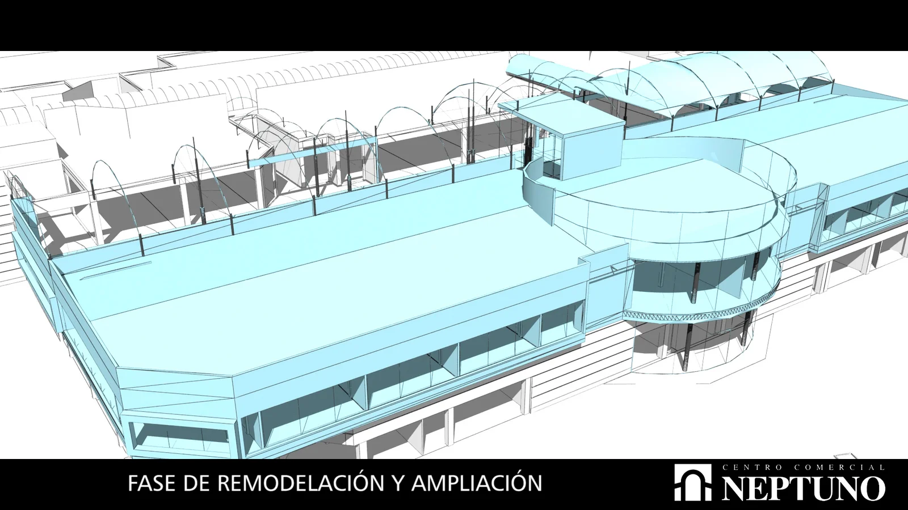
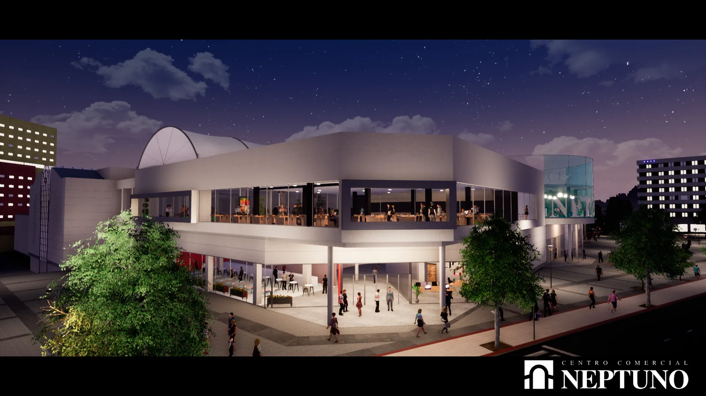
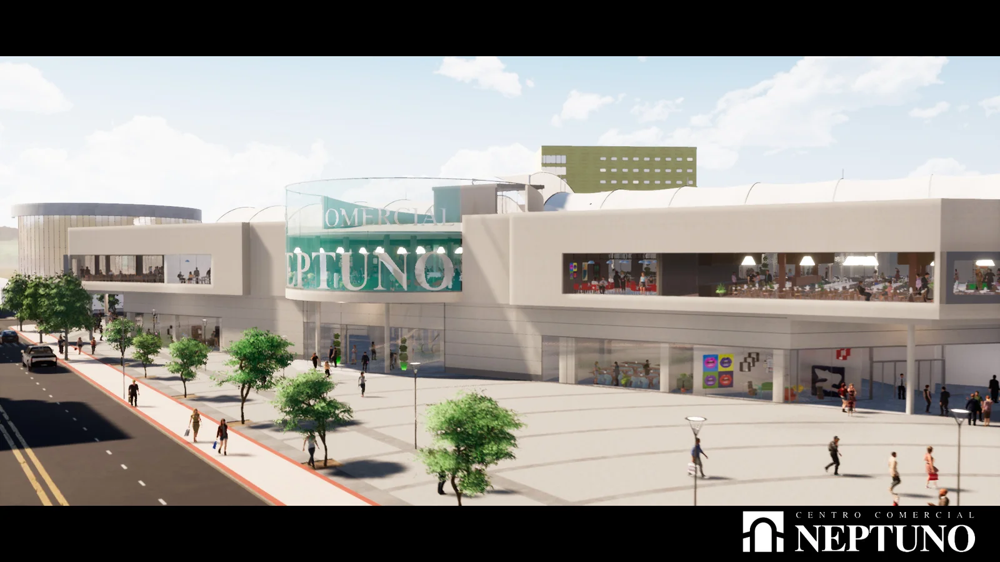
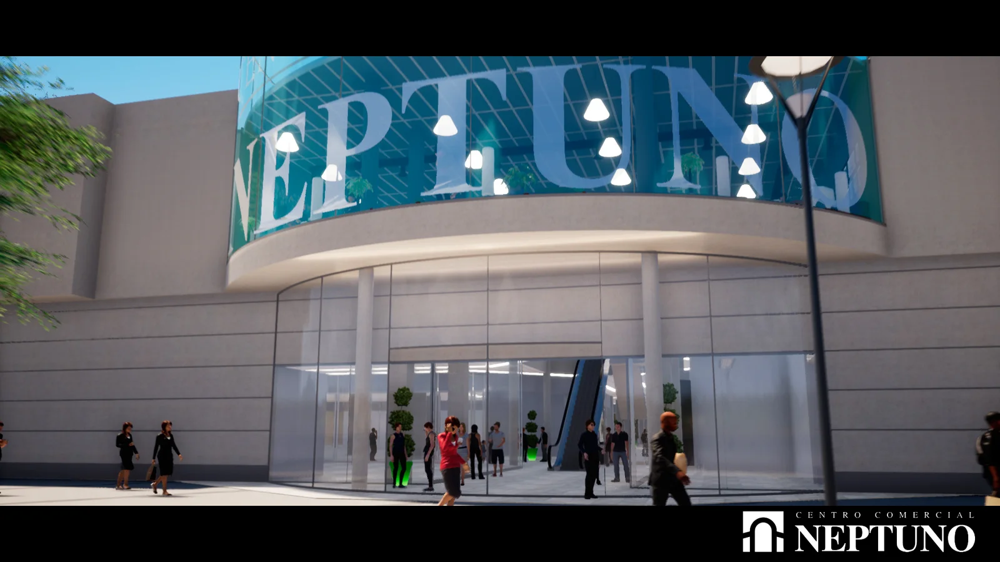
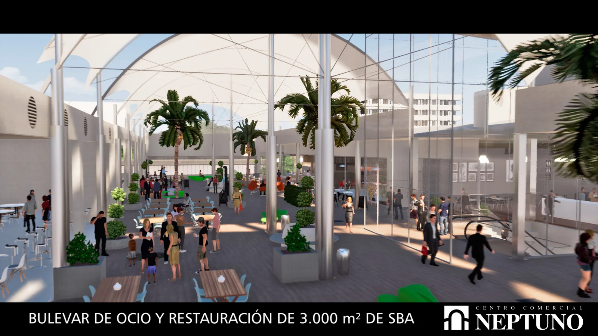
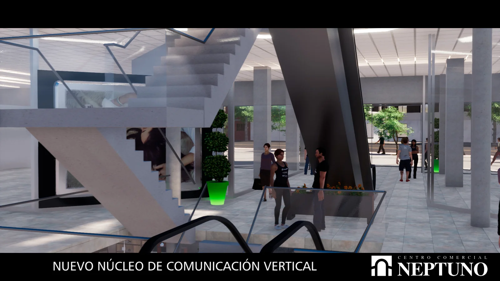

El Proyecto
Una renovación integral que devuelve al Centro Comercial Neptuno su papel como referente de ocio, cultura y gastronomía en Granada.
El proceso
De lo que fue a lo que será
La transformación del Neptuno parte de un análisis exhaustivo de sus estructuras actuales. Dos fases técnicas definen el camino: el desmontaje de lo obsoleto y la construcción de lo nuevo.


El resultado
La visión del nuevo Neptuno
Cinco espacios rediseñados desde cero para crear una experiencia urbana única en el corazón de Granada.




